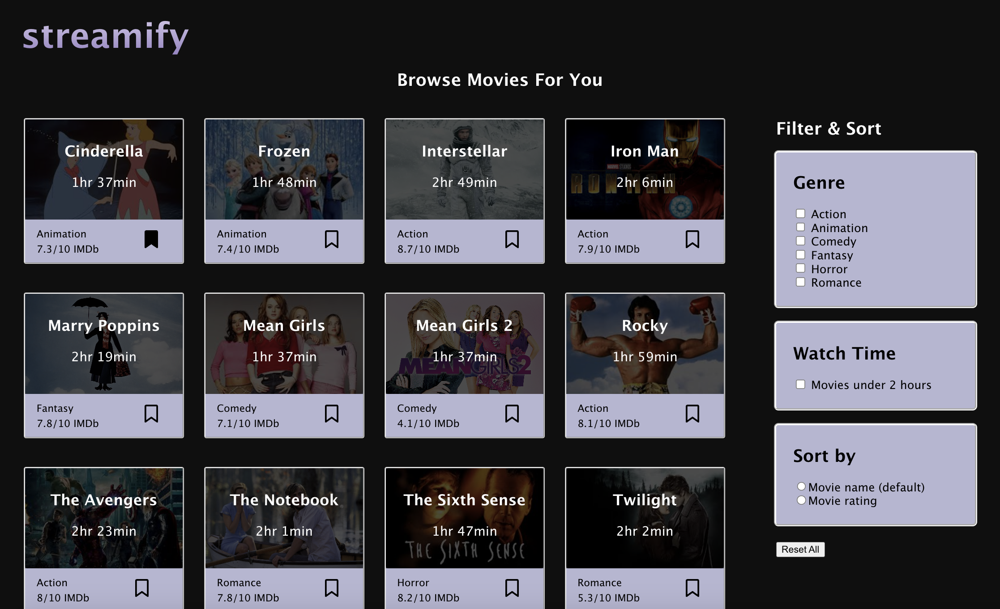
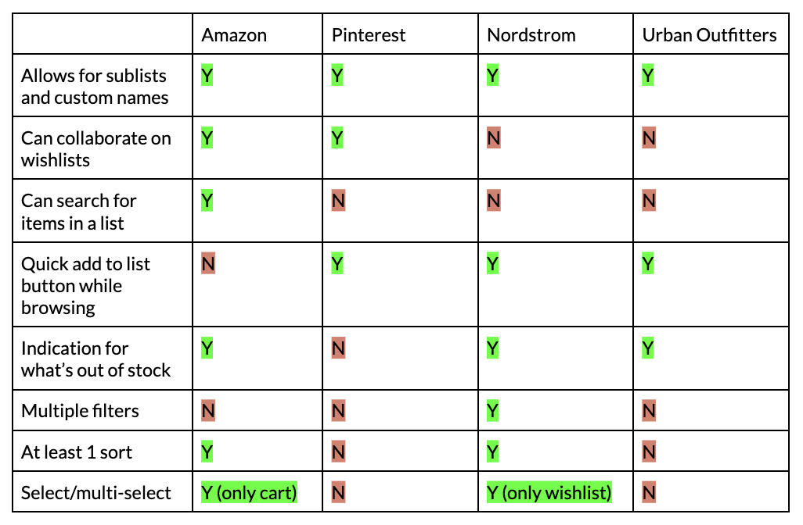

I designed an interface for filtering, sorting, and favoriting of movies.
Before I began, I selected 4 websites with a favoriting function to analyze the way they organize their information and utilize aggregators. The websites I chose were Amazon, Pinterest, Nordstrom, and Urban Outfitters, and I captured my discoveries in the following Competitive Comparison Chart:
Having sublists with custom names is a successful feature adopted by all the websites I looked at as it allows for user customization and grouping of items. This is especially successful for a website like Amazon that holds a huge variety of items that can serve many purposes. I think it was effective that Amazon and Urban Outfitters use an F scan pattern for this where the user can see their different wishlists on a left banner while they view the items of the wishlist on the right.
Similarly for an everything-shopping site like Amazon, aggregators are important to allow users to quickly organize for a certain factor, however smaller features such as search may be less successful if it is quicker to just look at a list and find the item you are looking for.
Pinterest’s purposes are very different from Amazon as the focus is on aesthetics/inspiration rather than concrete shopping. Thus collaboration and grouping are the only factors they implemented, leaving out any sort of aggregation within Pinterest boards themselves. I like how the collaboration feature is emphasized in the visual hierarchy by placing the board authors (with a +) directly below the board name.
Lastly, I looked at Nordstrom and Urban Outfitters, which have a focus on clothes unlike Amazon and Pinterest. These sites were similar in their favoriting features, the most successful in my opinion being to allow a “quick add” option from the favorite list to the cart, and to indicate if any item is out of stock (which would replace the “quick add” option). Interestingly, Nordstrom implemented a multi-select option for their favorites list which may not be a very necessary feature as clicking each item to multi-select and then remove/add to cart takes the same amount of time as just clicking “remove” or “add to cart” on each item individually. Nordstrom was also the only website to have multiple filter options, using a fitting checkbox UI.
Given these reflections, I decided on some features that I wanted to implement for my own list-based interface:
I decided to implement a movie organizer platform, Streamify, where users are able to make lists for "favorited" movies or movies that they want to watch later. Users will be able to filter by genre and watch time (over/under 2 hour watch time). There is also a sort option to display movies by rating (taken from IMDb) or alphabetical by name.
See the final result for Streamify here.
With more time, I would like to add the option to create and maintain multiple customized lists using the F scan pattern from the Amazon example. Additionally, I would like to pull the movie cards from a large database of movies and add a search feature for users to quickly find any title they want to save to a list.